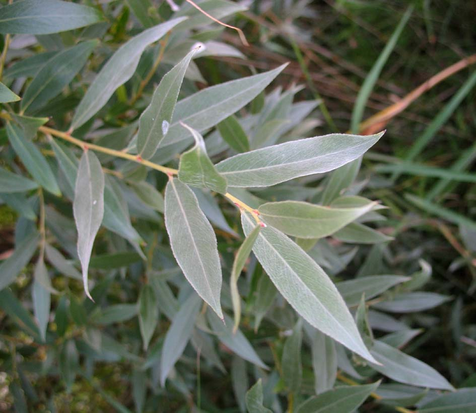
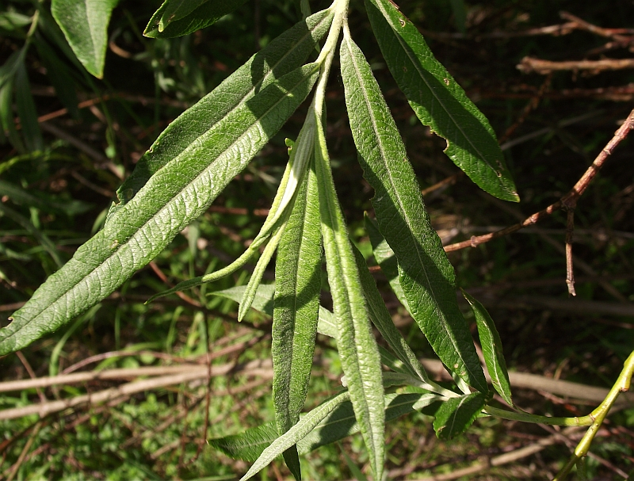
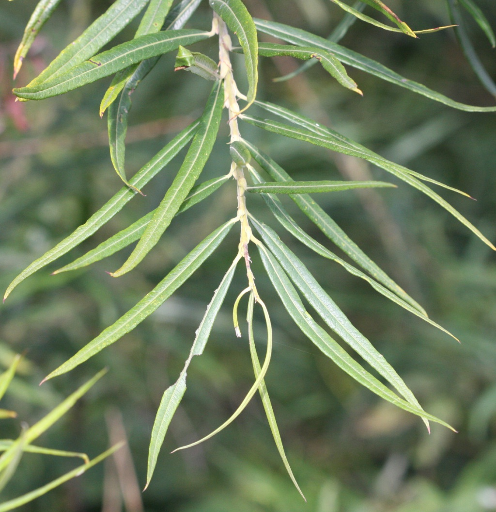
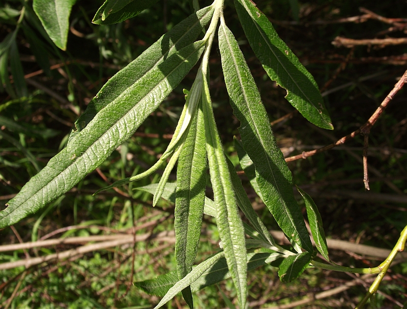
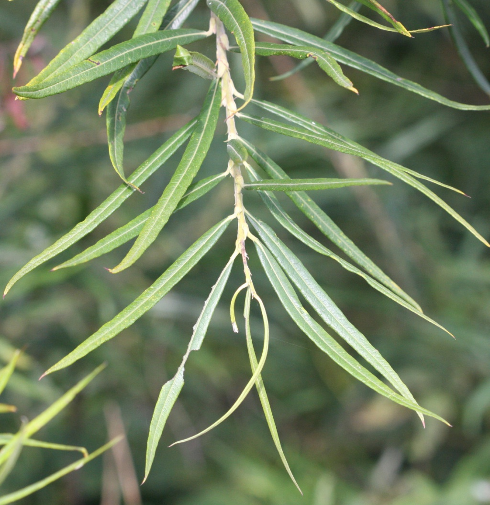

Liście po obu stronach
srebrzysto owłosione
duży krzew lub drzewo Liście nagie, pędy głośno
Liście nagie, pędy głośno
trzaskające przy odłamywaniu,
duży krzew lub drzewo  Liście delikatnie omszone od
spodu, ale bez połysku,
krzew lub małe drzewo  Liście delikatnie omszone od
spodu, z połyskiem,
górna strona naga, krzew Liście matowe, spodem
Liście matowe, spodem
niebieskawe, blaszka liściowa
najszersza bliżej wierzchołka
srebrzysto owłosione
duży krzew lub drzewo
Liście nagie, pędy głośnotrzaskające przy odłamywaniu,
duży krzew lub drzewo  Liście delikatnie omszone od
spodu, ale bez połysku,
krzew lub małe drzewo  Liście delikatnie omszone od
spodu, z połyskiem,
górna strona naga, krzew
Liście matowe, spodemniebieskawe, blaszka liściowa
najszersza bliżej wierzchołka